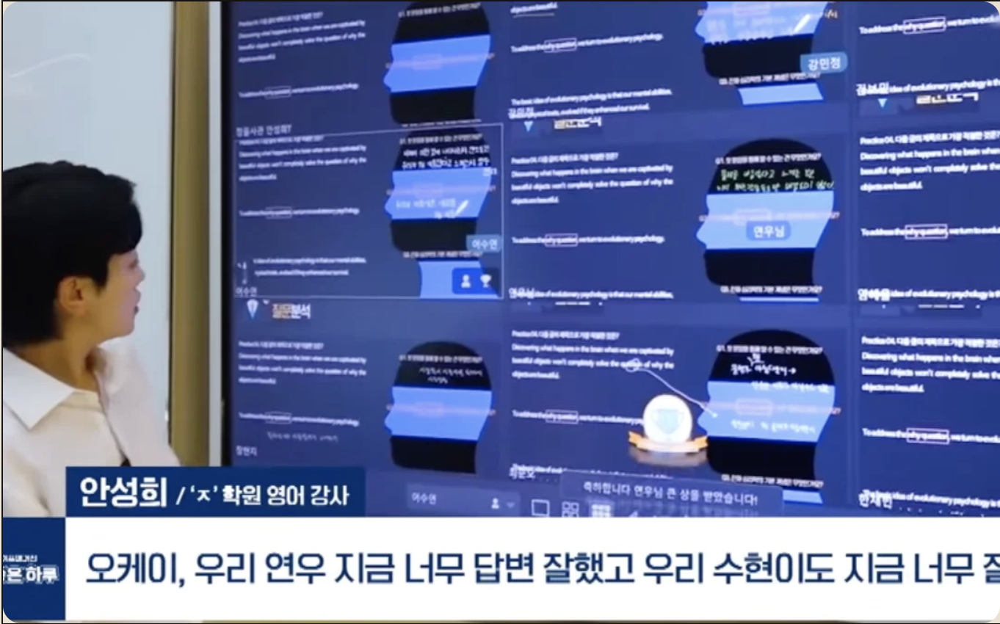
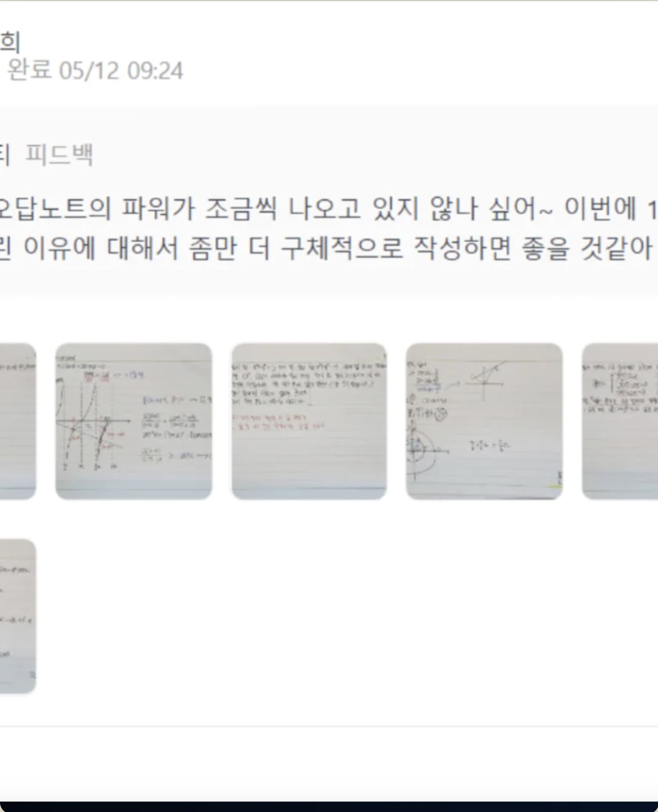
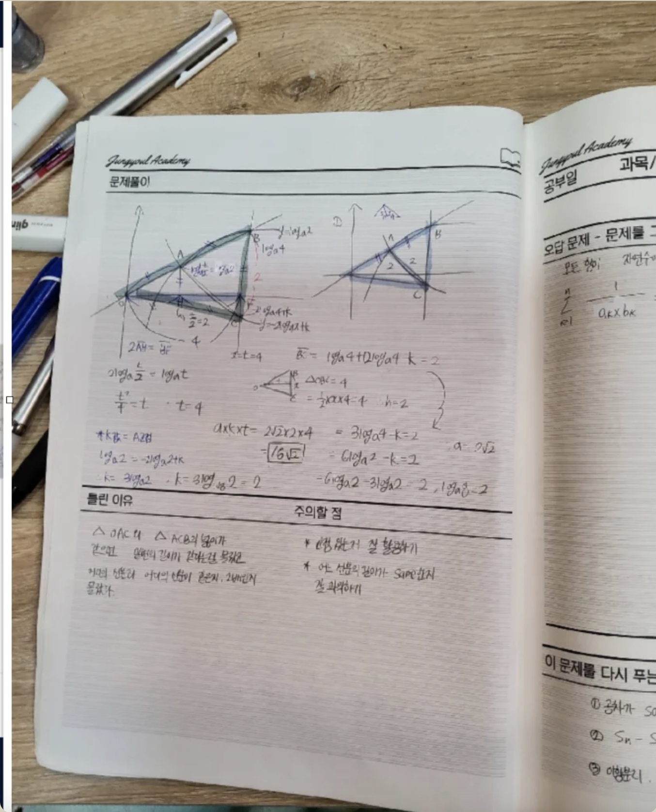
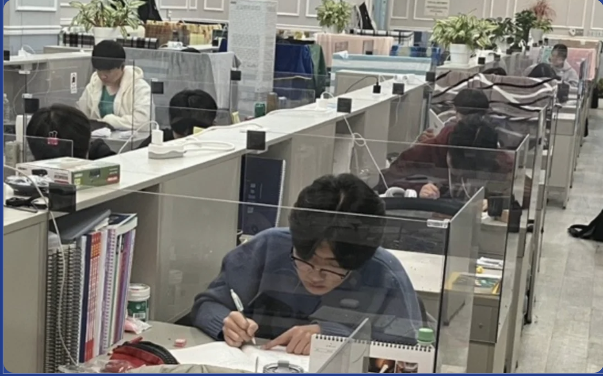
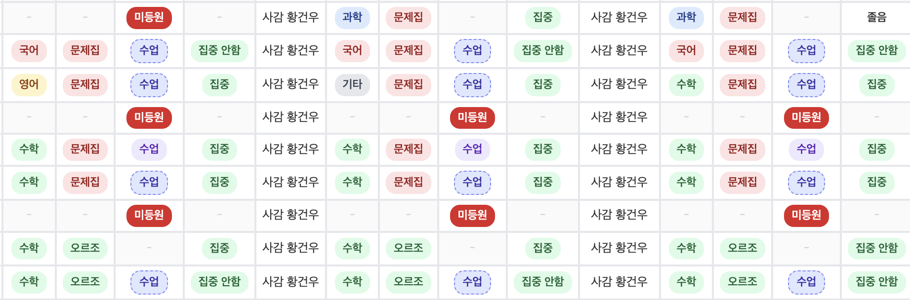

A. 이론노트
"배운 원리를 자기 언어로 다시 쓰기"
- 핵심 개념 하나 선택, 도입어·에피소드 먼저 적기
- 교과서 문장을 그대로 베끼지 않고, '이게 왜 이렇게 되는가'를 자기 언어로
- 마지막 줄: '내일 설명해야 한다면 한 줄의 요약' (아하포인트)
★ 개념 적힘 (PASS) · ★★ 자기 언어 (+1점) · ★★★ 아하포인트 (+3점)
20번째 썸머핫습의 학습 설계 — 진짜공부의 사이클을 만드는 4주.
정율사관학원이 함께 짭니다.
평일 2–3시간 · 주말·방학 4–5시간의 골든 라인. 30분 단위 학습이력 관리와 PM 동행 시스템으로, 책상에 앉아 있던 시간이 아닌 진짜 몰입한 시간만이 실력으로 적립됩니다.
여름의 60일이, 1년 성적의 방향을 결정합니다.
정율 재학생 누적 데이터로 만든, 진짜공부의 4주 사이클.
정율 재학생 15만명 누적 데이터가 가리키는 한 줄. 여름의 60일이 1년 성적의 방향을 결정합니다.
학기 중 진도 압박 속에서는 절대 풀리지 않는 누적 결손을 해소할 수 있는 유일한 시간.
학기 중 누적량 대비 여름방학 4주에 가능한 순공시간이 단연 가장 많음.
학습 루틴이 무너진 학생도 4주만 집중하면 새 루틴이 박힙니다.
학기 중에는 점수를 보지만, 여름에는 점수가 안 되는 이유를 봅니다.
약점 진단·1:1 피드백·30분 단위 학습이력 관리를 동시에 진행한 학생군은,
동일 학년 평균 대비 성적 향상폭이 1.7~2.4배 컸습니다.
"공부를 못한다"가 아니라, "자신의 공부를 모른다"가 더 큰 문제입니다.
Ryan & Deci (2000) 자기결정성이론(SDT)이 말하는 4단계 사이클입니다.
원리를 자기 언어로 다시 쓸 수 있다. '외운 것'이 아닌 '말할 수 있는 것'.
"내가 안다"는 감각이 손에 잡힌다. 막연한 자신감이 아닌 구체적 통제감.
어제와 다른 나를 인지한다. 어제 못 풀던 문제가 풀린 순간.
강요 없이도 다음 한 걸음. 외부 보상 없어도 다음 페이지를 펼치는 힘.
이 네 단계 중 하나라도 빠지면 학생은 '공부를 하기는 하지만, 다음으로 가지 않는' 상태에 갇힙니다.
껍데기는 외형, 진짜는 '아하포인트'의 흔적입니다.
SRL · 피드백 — 학습 효과의 객관적 근거가 있는 방법론을 씁니다.
4배의 차이 — 같은 '피드백'이라도 효과가 4배 벌어집니다.
Bring Your Own Device — 학생 한 명 한 명의 디바이스가 수업의 입력 장치가 됩니다.

강사→학생 일방향이 아닌, 학생 디바이스 응답이 수업의 다음 줄을 결정합니다.
강사가 정답률·반응 시간을 실시간 파악, 막힌 지점에서 멈춰 재설명합니다.
현장·비대면·자율학습 시간 모두 동일한 양방향 환경으로 학습합니다.
이론노트 · 당일복습 1:1 피드백 · 오답노트 — 세 종류의 노트가 매일·매주 검수됩니다.


'공부 시간'이 아니라 순공(純工) 시간. 책상에 앉아 있던 시간이 아닌, 실제로 몰입한 시간만이 실력으로 적립됩니다.
국제·국내 연구가 일관되게 가리키는 시간대. 50분 집중 + 10분 휴식(Pomodoro) 사이클로, 순공 타임을 엄격하게 계산합니다.
집중 효율 극대화 지점. 3시간 초과 시 피로·저효율 위험, 1시간 이하는 절대량 부족.
수능 고득점자 주 30시간+ 누적량 기준. 책상 앉은 시간 아닌, 몰입한 시간만 집계.
하루 단위가 아닌 30분 블록 단위로 학생 본인이 체크. 매일 검수와 주간 시각화가 따라붙습니다.


책상 '앉은 시간'이 아닌 실제 몰입한 30분을 학생이 직접 체크.
매일 비효율 시간대를 PM 선생님과 함께 다음 날 바로 조정.
일주일이 쌓이면 학생이 자신의 학습 패턴을 그래프로 봅니다.
'무엇을 할까'가 아니라 '무엇을 하지 않을까'를 먼저 정해야 합니다.
모의고사·내신·정율 진단지 정량 데이터 + 면담 정성 진단.
약점 3개 영역 합의. "다 하자"가 아니라 "무엇부터".
주간 단위 학습 분량·순공시간·휴식·체력 회복 동시 설계.
매주 1:1 코칭 미팅으로 플래너 점검·다음 주 재설계.
플래너는 '지키게 하기 위한 종이'가 아니라, 학생이 자기 자신을 다시 보는 도구입니다.
'이거 어떻게 풀어요'는 질문이 아닙니다. '왜'가 들어 있는 질문만이 지식을 확장합니다.
이해의 가장 정확한 지표는, 다른 학생에게 가르칠 수 있는가입니다. 학생끼리 서로 가르치는 시간을 시간표 안에 명시합니다.
모든 혜택은 한 방향을 향합니다 — 학생이 자기 학습을 더 깊이 보게 하는 것.
'질문하는 법' 자체를 가르치는 별도 트랙. '왜'가 들어간 질문으로 전환하는 4주 교육.
질문 광장에서 좋은 질문과 답변에 매주 포인트 누적.
'무엇을 잘했는가·다음 한 걸음은 무엇인가' 정보량 높은 피드백 카드 매주 1장.
추가 비용 없는 자유 수강. 약점 한 영역을 따로 한 번 더 돌릴 수 있습니다.
전 과목·전 단원 디지털 교과서. 검색·북마크·자기 메모 기능 포함.
늦은 밤·주말에도 답변 회신. 답변자에게도 보상 지급.
우리는 시간과 공간의 제약 없이 양방향 맞춤형 배움을 제공하여, 개인의 성장과 발전을 돕습니다.
학생 한 명 한 명의 약점·일정·체력을 봅니다. '반'이 아닌 '한 사람'의 4주 설계.
학생 응답이 수업의 다음 줄을 결정합니다. 강사→학생 일방향 강의 없음.
'많이 가르치는 것'이 아닌 '깊이 배우게 하는 것'. 이해→유능감→성장감→지속 사이클 매일.
과정이 정확하면 결과는 따라옵니다. 성적을 보장하는 재학생 전문 학원.
※ 식사 시간 · 휴식 시간 별도 운영.
2과목 이상 자유 선택. 자습관 이용은 전 학년 필수.
네! 국어 · 영어 · 수학 · 과학 중 수강을 희망하는 과목을 선택해서 수강하실 수 있습니다. 단, 2과목 이상 수강하셔야 하며, 자습관 이용은 전 학년 필수입니다.
식사비용은 수강료에 포함되어 있지 않습니다. 점심·저녁 식사 시간은 시간표에 별도 편성되어 있으며, 도시락을 싸오시면 학원 내 별도 공간에서 자유롭게 취식 가능합니다. 외부 식당 이용도 가능합니다.
별도 차량 운행은 하지 않습니다. 학원이 부천·인천 권역 접근성 좋은 위치에 있어 대중교통으로 등원하시면 됩니다. 위치·교통편 안내는 상담 시 자세히 도와드립니다. (☎ 032-321-9937)
네, 가능합니다. 입학 시점에 학습 진단을 거쳐 개별 학습 플랜을 새로 짭니다. 수업은 진도가 정해져 있지만, 학습 코칭과 자습 루틴은 입학 첫날부터 1:1로 셋업합니다. 단, 7/20 개강에 최대한 가까이 시작하시는 것이 성과 면에서 유리합니다.
자습관 입실 시 휴대폰은 사감실에 보관합니다. 학습용 노트북은 신청 시 별도 승인 후 사용 가능하며, '구루미' 앱으로 실제 순공 시간을 자동 측정·기록하여 학부모님께도 공유됩니다. "자습관에 있었지만 공부 안 한" 시간은 측정되지 않습니다.
좌석 한정 · 매 회차 빠르게 마감되고 있습니다. 원하는 날짜를 골라 지금 신청하세요.